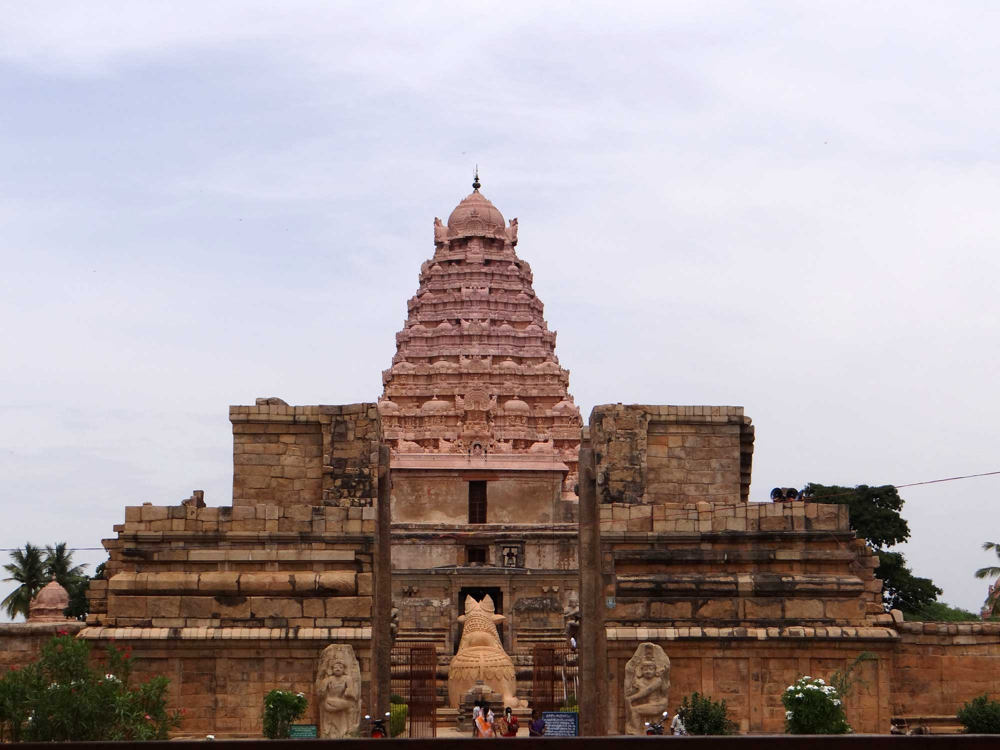

Beauty of Ariyalur
GANGAI KONDA CHOLAPURAM

The Brihadisvara Temple is a Hindu temple dedicated to Shiva in Gangaikonda Cholapuram, Jayankondam, in the South Indian state of Tamil Nadu. Completed in 1035 CE by Rajendra Chola I as a part of his new capital, this Chola dynasty era temple is similar in design, and has a similar name, as the older 11th century, Brihadeeswarar Temple about 70 kilometres (43 mi) to the southwest in Thanjavur.[2] The Gangaikonda Cholapuram Temple is smaller yet more refined than the Thanjavur Temple. Both are among the largest Shiva temples in South India and examples of Dravidian style temples. The temple is also referred to in texts as Gangaikonda Cholapuram Temple or Gangaikondacholeeswaram Temple